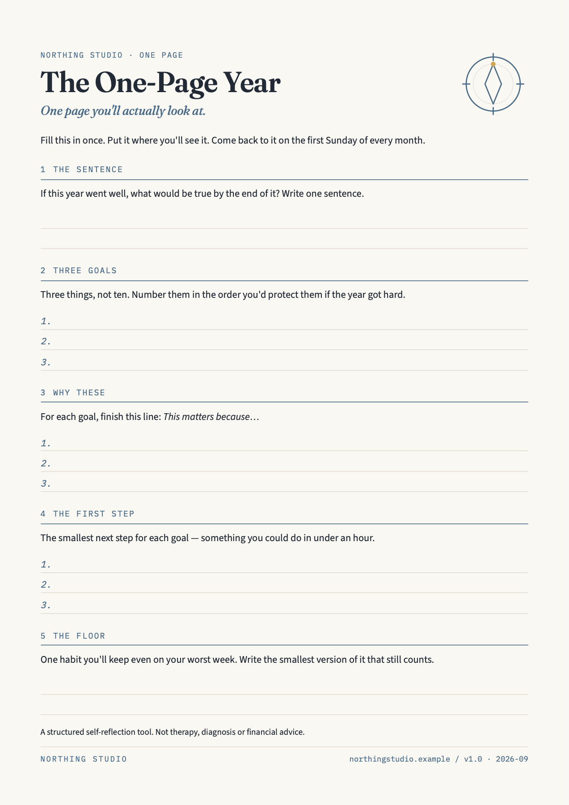

Example

The book is finished, and my evenings stop belonging to my inbox. Finish the first draft Run three mornings a week Two weekends away with Dad I have carried it around for four years It is the hour that makes the rest work He is seventy-four Open the file. Read chapter one. Put my shoes by the door tonight Book the train for March Ten minutes at the desk, even if I only reread what I wrote yesterday.